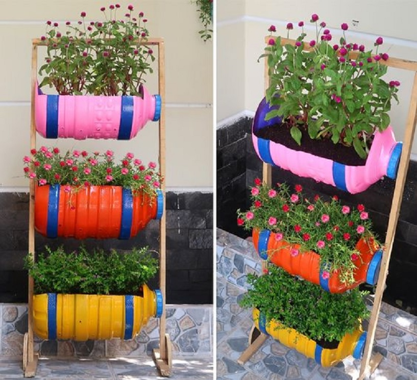

Cara Membuat Pot Bunga Dari Botol

Bahan Yang Diperlukan
Botol plastik bekas.
Pisau.
Hiasan untuk mata.
Pupuk/tanah untuk menanam.
Tanaman.
Cara Membuat
- Siapkan bahan dan peralatan yang dibutuhkan.
- Setelah semua sudah terkumpul, langkah selanjutnya adalah memotong botol plastik dengan pisau.
- Ukurannya dikira-kira saja atau lihat pada gambar.
- Beri sedikit hiasan sesuai keinginan. Jika ingin sesuai contohnya, tempelkan saja tutup botolnya sebagai
mulut dan tambahkan mata boneka, lalu tempel.
- Jangan lupa untuk melubangi bagian bawah botol agar air tidak mengendap di dalam botol.
- Masukkan botol pupuk dan tanah ke dalam botol.
- Masukkan bibit tanaman yang ingin ditanam.